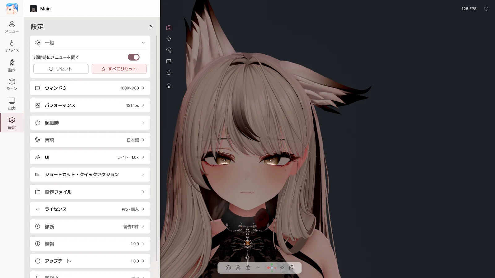

10. 設定#

設定ページ
| 項目 |
内容 |
| 起動時にメニューを開く |
オフにすると UI なしで起動 |
| リセット |
トラッキング・手・PhysBone などを初期状態に |
| すべてリセット |
パラメーター・アバターの位置・ポーズ・カメラまで初期状態に |
ウィンドウ#
| 項目 |
内容 |
| 解像度 |
ウィンドウのサイズ |
| 全画面（ボーダーレス） |
全画面表示 |
| 常に最前面 |
ほかのウィンドウより前に表示 |
| 閉じるボタン（×） |
トレイに最小化 / 終了 |
パフォーマンス#
| 項目 |
内容 |
| VSync / フレーム制限 |
フレームレート |
| アンチエイリアス / 影 |
画質 |
| 現在 |
現在のパフォーマンスを表示 |
| 上部に常に表示 |
パフォーマンスを上部に表示 |
| 優先度・コア・GPU（詳細） |
ゲーム・OBS と一緒に使うときの CPU・GPU の配分 |
起動時#
| 項目 |
内容 |
| Web カメラのトラッキングを開始 / マイクを開始 |
起動時に自動でオン |
| 起動時のアバター |
毎回確認 / 前回のアバター / 既定のアバター |
| アバターフォルダー |
スタート画面に表示するアバターのフォルダー |
| 再起動 |
スタート画面から再起動 |
English · 한국어 · 日本語 · 简体中文
| 項目 |
内容 |
| テーマ |
ライト / ダーク |
| パネルの位置 |
左 / 右 |
| サイズ |
UI のサイズ |
| クイックツールバー |
ツールバーの不透明度、位置のリセット |
ショートカット・クイックアクション#
どこでも（グローバルショートカット）#
ゲーム中や、Avatar Live が背面にあるときにも使えるキーです。ほかのソフトのキー入力を妨げません。
- + ショートカットを追加
- 動作を選ぶ：アバターメニュー · ジェスチャー · カメラビュー · 保存したビュー · トラッキングリセット · ライティングプリセット · PhysBone リセット · すべてリセット
- キーを設定… を押し、使いたいキーの組み合わせを押す
- メニューのボタン・ジェスチャーは 押している間 / 押して切り替え を選べます。
- F1 だけを単独で使うことはできません（クリーンビュー専用）。
クイックアクション#
グローバルショートカットと同じ動作をボタンとして置きます。5 章をご覧ください。
設定ファイル#
| 項目 |
内容 |
| フォルダーを開く |
設定フォルダーを開く |
| アプリ設定をリセット |
アプリの設定を初期状態に（アバターごとの設定・デバイスの設定はそのまま、ショートカット・クイックアクションは削除されます） |
ライセンス#
現在のエディションとライセンス ID を表示します。
| ボタン |
内容 |
| 別のコードを入力 |
別のライセンスに切り替え |
| Proにアップグレード（Basic のとき） |
BOOTH で購入したアップグレード（Upgrade）を入力すると Pro に |
| 購入したコードを入力（体験中） |
購入したライセンスで体験版を置き換え |
| 今すぐ確認 |
ライセンスを再確認 |
| BOOTH で購入 |
Pro を購入 |
| 項目 |
内容 |
| エラーレポートを送る |
問題の説明とログを送る（押したときだけ送信） |
| ログフォルダーを開く |
ログフォルダーを開く |
| ログの表示 |
エラー・警告を確認 |
バージョンと開発者へのリンク。
アップデート#
| 項目 |
内容 |
| 今すぐ確認 |
新しいバージョンを確認 |
| ダウンロード |
新しいバージョンをダウンロード |
| 再起動してインストール |
すぐにインストール |
| 自動で確認してダウンロード |
新しいバージョンを自動でダウンロードしておく |
| 終了時にインストール |
終了するときにインストール |
インストールに失敗した場合は、自動で以前のバージョンに戻ります。アバターと設定はそのままです。
最終更新: 2026-10-09